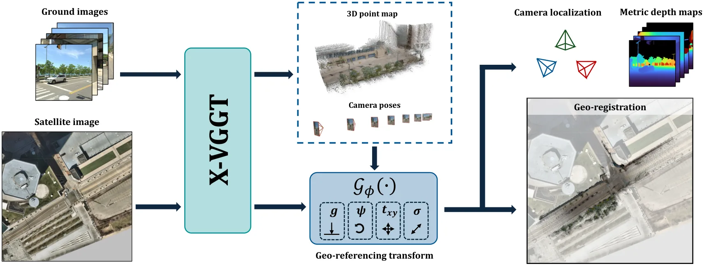
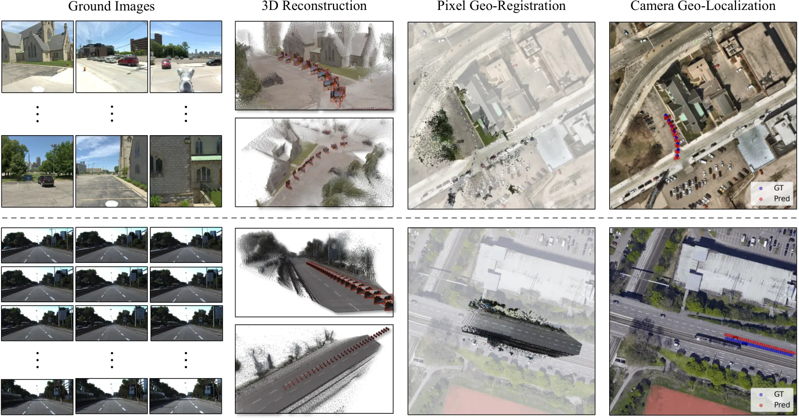
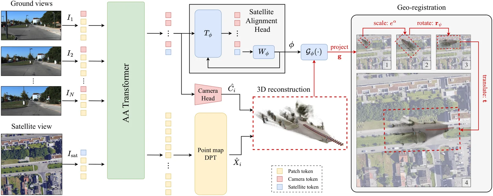
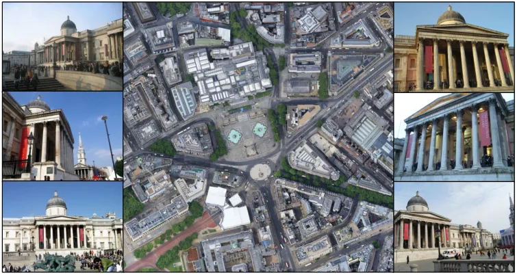
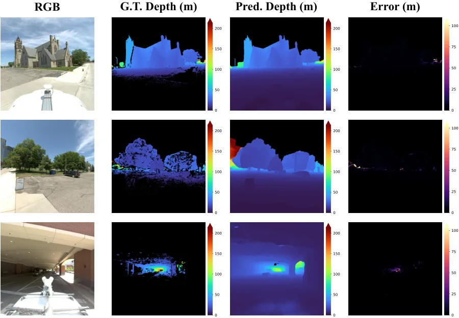
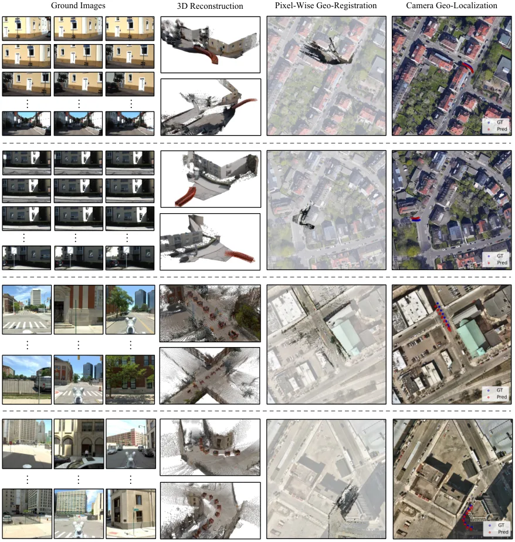

X-VGGT：用地基图像加一张卫星图，把重建直接锚到地理坐标系
Georeferenced Cross-View 3D Reconstruction from Ground and Satellite Images
X-VGGT 以 VGGT 为骨干并初始化为其权重，把卫星图当作第 0 个视角的 token 送进交替注意力 Transformer，再用一个卫星对齐头（SAH）回归重力方向、偏航、对数尺度与平面平移，得到从局部重建到卫星平面的正交投影变换。训练用三组监督：变换参数 L_φ、稠密像素地理配准 L_dense、相机中心投影 L_center。在 KITTI 跨区域测试集上相机中心误差 24.62 m、朝向误差 22.50°，优于 Loc2 的 32.00 m / 69.99° 与 VGGT+Loc2 的 31.46 m / 81.16°；Metropolis 零样本 14.35 m / 17.59°；像素级地理配准误差 KITTI 25.52 m、Metropolis 17.84 m，而 VGGT+Loc2 分别是 178.45 m 与 50.54 m。局部三维重建能力基本保持（KITTI AUC 83.90 对 VGGT 83.29）。
camera geo-localization on KITTI
pixel geo-registration
zero-shot Metropolis
local 3D AUC
作者、单位与技术谱系 · Research context
作者与单位
研究脉络
- VGGT（Visual Geometry Grounded Transformer, 2025）方法基座关系：提供多视图 Transformer 的点图/位姿/深度联合预测与预训练权重，本篇在其上加入卫星视角与地理对齐头。[论文 §2 与 §4.5]
- DUSt3R / MASt3R（2024）上游工作关系：确立“点图 + 相对位姿”的前馈重建范式，是本文对照与问题设定的来源之一。[论文 §2]
- Loc2 / FG2 跨视角定位对比基线关系：只估计单张地面图在卫星图中的平面位置与朝向，不重建几何；本文用它们作为“只有二维定位”的代表。[论文表 1 与 §4.3]
合作网络
- UCF CRCV 与个人项目页David G. Shatwell → University of Central Florida关系：署名单位与项目页归属[X-VGGT 项目页]
- X-VGGT 与 VGGT 权重X-VGGT → VGGT关系：模型初始化依赖[论文 §4.5]
- UCF 与 KITTI 卫星增强数据University of Central Florida → KITTI（Shi & Li 增强版）关系：评测数据依赖[论文 §4.1]
作者与单位来自论文首页；脉络中的基座/上游/基线关系依据论文自述与参考文献；未发现公开材料说明两位作者的具体指导关系，故不推断。
方法本质拆解 · What actually changed
从 VGGT 权重继续训练
模型以 VGGT 检查点初始化，再在带地理参考卫星图的地面序列上继续训练，骨干、相机头与 DPT 头都参与更新，不是冻结特征只训一个对齐头。新增的卫星对齐头与地理损失是训练的主要变化，论文没有报告从头训练的对照。
约束是场景级相似变换与重力先验
地理对齐被限制为一个场景级的正交投影变换，只有重力方向、偏航、对数尺度与二维平移四个自由度，等于假设地面局部平坦、卫星图正射；这比逐相机回归 GPS 更强，因为它强制所有相机共享同一公制尺度与朝向。损失上再用稠密像素投影与相机中心投影把这个变换钉到卫星平面。
一次前向，无后端优化
推理只做一次前馈：输入 16 张地面图与 1 张卫星图，输出位姿、点图和 φ，没有 RANSAC、没有 Sim(3) 拟合、也没有测试时优化。正因如此，误差完全由网络与输入质量决定；论文也明确不对预测坐标做边界裁剪，失败会直接体现为超出 150 m 的大误差。
让卫星 token 参与注意力，学一个公制锚
卫星图不是后处理参考，而是与地面 token 一起进注意力的第 0 个视角，因此网络可以在特征层面完成跨视角匹配；对齐头再把这种匹配压缩成四个几何量，把局部重建整体搬到卫星平面。它没有做的是逐像素稠密匹配或光束法平差，也没有显式建模卫星图的拍摄时间差异，所以当时相变化大时会退化。
输入 = N 张地面图 + 1 张带地理参考正射卫星图；改变的位置 = VGGT 骨干输入序列与新增卫星对齐头；约束/动作 = 场景级重力/偏航/尺度/平移变换 + 三路地理监督；直接效果 = 相机与像素直接落到地理坐标系，KITTI 像素误差 25.52 m。

结论与问题Conclusion & Motivation
核心结论
把卫星图当成多视图 Transformer 里的一个视角，并额外回归一个场景级“重力+偏航+尺度+平移”变换，就能让前馈重建模型直接输出带地理坐标的相机与像素位置。KITTI 跨区域测试集上相机中心误差 24.62 m、朝向 22.50°，比 Loc2（32.00 m / 69.99°）和 VGGT+Loc2 拼接基线（31.46 m / 81.16°）都好；Metropolis 零样本为 14.35 m / 17.59°。像素级地理配准的优势更明显：KITTI 25.52 m、Metropolis 17.84 m，而 VGGT+Loc2 是 178.45 m 与 50.54 m，说明“把重建拟合到预测的 GPS 点”并不能替代稠密几何与卫星平面的联合对齐。
动机与问题
地面图像容易采集但只能恢复到未知尺度的局部几何，卫星图带有像素级地理坐标却不能提供街景结构，两者正好互补；难点在于跨视角配准：俯视正射影像与街景在视角、外观、可见结构上差异极大。已有跨视角定位方法只给出单张图的平面位置与朝向，不重建几何；DUSt3R/MASt3R/VGGT 一类前馈模型能出点图与位姿，但都在局部坐标系里，且在极端视角变化下容易失效。于是问题被定义为：给定 N 张地面图和一张带地理参考的卫星图，能否一次前馈同时得到相机位姿、稠密点图和把两者接到卫星平面的场景级变换。
方法Method
方法总览
骨干沿用 VGGT 的交替注意力结构，但输入序列包含卫星图 token 与 N 张地面图 token，卫星 token 通过注意力与地面 token 交换信息。地面 token 由相机头与 DPT 头解出位姿与稠密点图；卫星 token 由卫星对齐头解出 φ=(g, r_ψ, α, t)，其中 g 是局部坐标系中的单位重力向量、r_ψ 是水平面内的偏航方向、α=log s 是对数尺度、t 是归一化卫星坐标下的平移。用该变换把相机中心和点图正交投影到卫星平面，就得到每个像素的地理坐标；训练用参数监督、稠密投影监督与相机中心监督三路联合。
关键技术细节
地理变换的构造是：以重力 g 定义卫星平面法向，把参考 x 轴投影到该平面得到 a，再取 b=g×a，用偏航 ψ 旋转基向量，最后做 exp(α) 缩放并加平移 t；卫星裁片跨度为 ρ_sat 米时，ρ_sat·e^α 就是每重建单位对应的米数，这一步把局部尺度显式接到公制。训练以 VGGT 权重初始化，继续在带卫星影像的地面序列上训练（附录 C 给出卫星裁剪、坐标目标与增强细节），损失是 L_φ + L_dense + L_center 三项；评测时不做任何 Sim(3) 或真值位姿对齐，预测坐标也不裁剪到卫星边界，因此错误预测可以超出 150 m 范围。

实验Experiments
实验设置
四个跨视角数据集：KITTI（用 Shi & Li 增强版，Google Maps 18 级卫星图，0.20 m/像素；训练用其序列，评测用地理上不重叠的 Test-2 划分）、Mapillary Metropolis（多方向行车图像 + MVS 深度，零样本）、WRIVA 与 ACC-NVS1（只有标定图像与 GPS 标注，无真值深度）。每个场景由 N 张地面图与一张 150 m×150 m 卫星裁片组成，地面相机质心随机落在中央 100 m×100 m 内，主评测最多 1024 个场景，消融用到 96 张地面图。基线分三类：跨视角定位 FG2/Loc2、三维重建 MASt3R/VGGT/Aerial-MegaDepth、以及 VGGT+Loc2 拼接基线；指标为相机中心误差（米）、朝向误差（度）、像素地理配准误差（米）与 RRA/RTA 联合 AUC（≤30°）。
实验数字与比较
表 2 相机地理定位（米 / 度）：KITTI 上 X-VGGT 24.62 / 22.50，Loc2 32.00 / 69.99，VGGT 130.05 / 32.17，VGGT+Loc2 31.46 / 81.16；Metropolis 14.35 / 17.59 对 37.06 / 89.19；WRIVA 26.05 / 40.64 对 35.16 / 87.41；ACC-NVS1 24.49 / 42.99 对 37.07 / 89.41。表 3 像素级地理配准：KITTI 25.52 对 Loc2 43.96、VGGT 146.35、VGGT+Loc2 178.45；Metropolis 17.84 对 50.54（VGGT+Loc2）、88.96（Loc2）。表 4 局部三维 RRA+RTA AUC：KITTI 83.90 对 VGGT 83.29；Metropolis 51.34 对 55.31（略低）；WRIVA 21.17 对 16.90；ACC-NVS1 72.91 对 67.96。
消融/失败边界
表 5 在 KITTI 上逐项加监督：只用 L_φ 时相机定位 30.35 m、朝向 32.87°、像素 33.17 m；加 L_dense 后为 27.95 / 34.49 / 30.91；再加 L_center 为 27.24 / 30.73 / 29.45，说明三路信号互补，但朝向在加稠密监督时反而略升（32.87→34.49），并非单调。失败边界有两类：一是拼接基线在 KITTI 上把像素误差推到 178.45 m，说明只对齐相机中心会牺牲稠密几何；二是 Metropolis 上局部三维 AUC 低于纯 VGGT（51.34 对 55.31），跨视角监督带来轻微局部几何代价。作者在附录 A 还说明，卫星图过期、低分辨率、被遮挡或与地面视图外观不一致时会退化，训练裁片尺度集中在 150–250 m，尺度外推需要重新适配。
局限与迁移Limitations & Transfer
局限与待核验
作者承认的限制：必须提供正射、带地理参考、分辨率已知的卫星图；模型在特定物理尺度范围（约 150–250 m 裁片）训练，明显更小或更大的区域可能需要微调；卫星图与地面视图不一致时对齐会失效。我们要核验的包括：KITTI 训练集与 Test-2 虽地理不重叠，但同城市同传感器，跨城市泛化只有 Metropolis 一个零样本集；WRIVA/ACC-NVS1 没有深度真值，像素级指标无法在这两个集上验证；重力向量由模型回归而非 IMU 提供，在坡道或非平面场景是否稳定，正文没有专项实验；与 Loc2 的对比中，Loc2 是单图方法、本文用 16 图，输入信息量不对等，公平性需要看附录的逐图对照。
与你研究路线的关系
这条线最贴合我们“GNSS 拒止/弱信号下的地图锚定”问题：把卫星正射图当作公制参考，比单纯依赖 GNSS 点位更稳，因为它约束的是整片像素而不是一个坐标。可迁移模块有两个：一是卫星对齐头的参数化方式（重力+偏航+对数尺度+平移），它把平面相似变换拆成可解释的四个量，便于加 IMU 重力先验或做退化检测；二是 L_dense 这种像素级投影监督，可以用我们已有的正射影像/高精地图生成弱监督，而不需要逐像素真值。下一步可以拿校园或园区无人机正射图 + 地面车载序列，复现 150 m 裁片设置，先测纯视觉的重投影误差，再与 GNSS/RTK 轨迹对比，看“视觉锚定”能否在 GNSS 多路径场景里提供独立校验。







